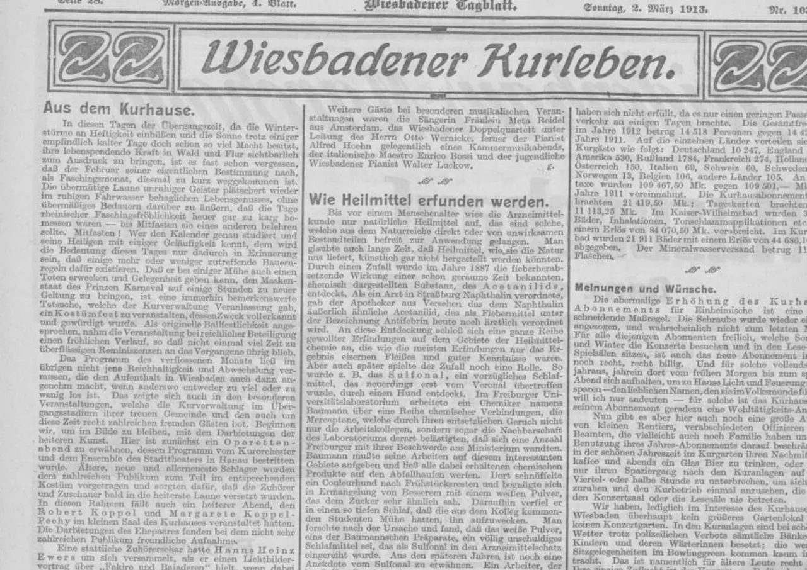

For families
Received a letter?
If Lilliput Research has written to you about a possible family connection or inheritance, this page explains what the letter means, how to check it and what choices you have.
Why have you written to me?
Our research suggests you may be related to someone connected with an estate or asset. We are contacting you to make you aware of the possible connection, not to tell you that an inheritance has been established.
The introductory letter and a brief explanation of the enquiry are free. You are under no obligation to use our services.
Can I see the family history?
Yes. We may already have prepared a family tree reaching back several generations. Where appropriate, we can share a summary of the relationships with selected historical documents or source references. Such material can be of interest to the family quite apart from any claim.
We do not disclose another living person's private details or restricted archive records merely because they appear in a family tree.
What happens if I want to pursue it?
You can ask what further documents may be required and decide whether to pursue the matter yourself, through your own solicitor or with additional research assistance from us. The responsible bank, estate administrator or authority assesses the claim and entitlement.
We have not submitted a claim in your name, and we do not require access to your bank account. Do not send sensitive identity or financial documents in an initial reply.
Would I have to pay?
There is no charge for receiving a letter or asking for a short explanation. If you choose to commission further work, its scope and any fees or expenses will be set out in writing before you agree.
Any recovered money should go directly to the beneficiary, estate or its appointed solicitor, not through Lilliput Research. Fees and independence.
Your choice
Check before deciding.
You are welcome to show the letter to an independent solicitor or enquire with the responsible institution yourself. Our postal correspondence address is published on this site, and you can ask us to explain the basis for the enquiry.
How to check our letter
Further questions
Does the letter prove I am an heir?
No. It identifies a possible family connection for further examination. The relevant institution or administrator determines any entitlement.
How much is the asset worth?
We cannot assume an amount from the historical records or a public notice, and no recovery is guaranteed. The responsible institution would need to confirm the position.
Is there a deadline?
Some claims have formal deadlines. Where one applies, it should be checked against the current notice or the responsible authority.
Can I decline further contact?
Yes. You may decline to engage us and ask not to receive further correspondence, subject to any applicable lawful record-keeping obligations.